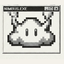

NimbusNebius × NVIDIA Global AI Hackathon · Personal AI trackRuns on Nemotron 3 · Nebius Token Factory
Your standing work, done every morning by a crew that asks before it acts.
- $0.0216one real morning
- 24 %saved by the router
- 0sent without your OK